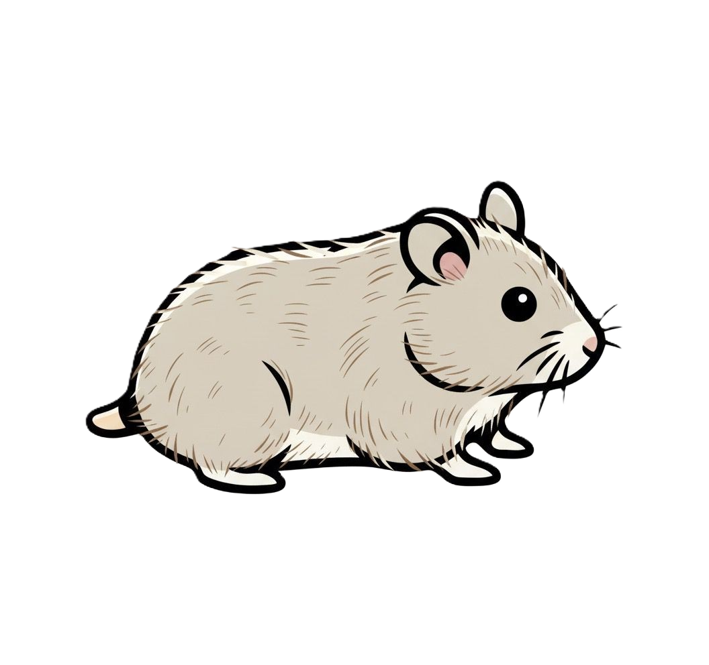

HamsterSolver
Métodos Numéricos: Resolución de sistemas de ecuaciones por Gauss-Seidel.
Configuración del Sistema
Tamaño de la matriz (n x n):
Tolerancia de error:
Generar Matriz
Sistema de Ecuaciones Lineales
Resolver por Gauss-Seidel
Resultados y Procedimiento
¿Dudas con la convergencia o el resultado? Pregúntale a HamsterSolver 🐹
Preguntar